Impuls (Bevægelsesmængde)
Translatorisk mekanik
Jacob Debel
Fysik A (Fysik B)
N2 på original form
N2 på original form
\[\vec{F}_{res} = \frac{d \vec{p}}{d t}\]
- Hvad er \(\vec{p}\)?
Impuls
Impuls (aka bevægelsesmængde)
\[p \equiv m \cdot v\]
eller med vektorer \[\vec{p} \equiv m \cdot \vec{v}\]
N2 igen
- \(\vec{F}_{res} = \frac{d \vec{p}}{d t}\)
- \(\vec{F}_{res} = \frac{d (m \cdot \vec{v})}{d t}\)
- \(\vec{F}_{res} = m \cdot \frac{d \vec{v}}{d t}\)
- \(\vec{F}_{res} = m \cdot \vec{a}\)
Makro
\[\vec{F}_{res} = \frac{\Delta \vec{p}}{\Delta t}\]
Impulsændring
\[\Delta \vec{p} = \vec{F}_{res} \cdot \Delta t\]
- Hvis \(\vec{F}_{res} = \vec{0}\)
- \(\Delta p = 0\)
- \(p= \text{konstant}\)
- Kaldes impulsbevarelse.
Regnetid
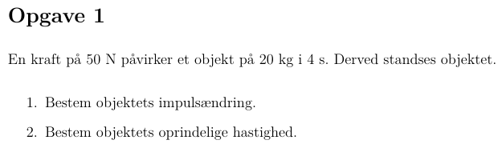
Eksempel

Sammenstød
- stødzoner
- 30 km/h
- deformation 40 cm, på tiden 1/10 s
- Bilens masse 800 kg
- \(\Delta p = 0 - mv\)
- \(F_{res} = \frac{\Delta p}{\Delta t}\)
- \(F_{res} = \frac{0 - 800 kg \cdot 8.33 m/s}{0.1 s} = -67 kN\)
- \(F_t \approx 8 kN\)
- \(\frac{F_{res}}{F_t} \approx 8.375\)
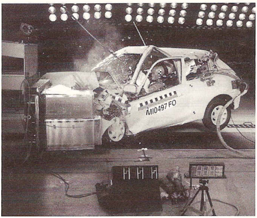
Regnetid
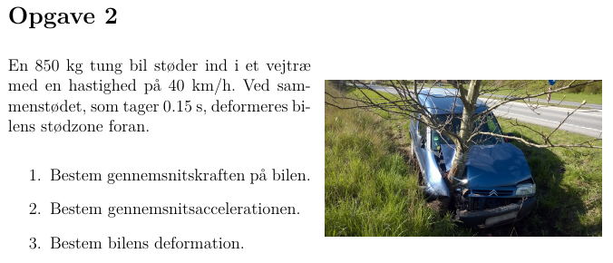
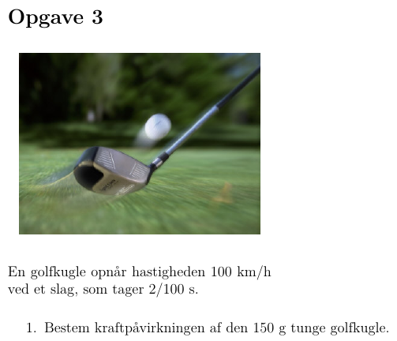
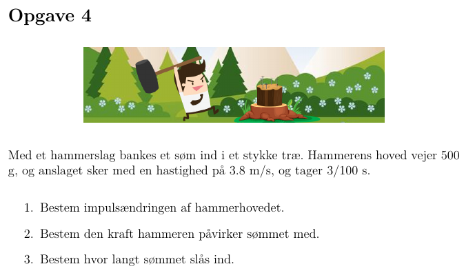
2- og mangepartikelsystemer
Jord og Måne som ét system
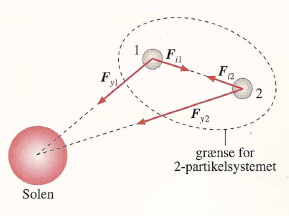
- Samlet impuls på systemet: \(\vec{p} = \vec{p}_1 + \vec{p}_2+\dots\)
- 1 og 2 er hhv. Jorden og Månen.
- Ydre kræfter fra Solen er \(\vec{F}_{y1}\) og \(\vec{F}_{y2}\).
- Indre kræfter er hhv. \(\vec{F}_{i1}\) og \(\vec{F}_{i2}\).
Impulsændring på Jorden (1)
- \(\Delta \vec{p}_1 = \vec{F}_{y1}\cdot \Delta t + \vec{F}_{i1} \cdot \Delta t\)
- \(\Delta \vec{p}_1= \left( \vec{F}_{y1}+\vec{F}_{i1} \right)\cdot \Delta t\)
Impulsændring på Månen (2)
- \(\Delta \vec{p}_2 = \vec{F}_{y2}\cdot \Delta t + \vec{F}_{i2} \cdot \Delta t\)
- \(\Delta \vec{p}_2= \left( \vec{F}_{y2}+\vec{F}_{i2} \right)\cdot \Delta t\)
Den samlede impulsændring på systemet
- \(\Delta \vec{p} = \Delta \vec{p}_1 + \Delta \vec{p}_2\)
- \(\Delta \vec{p} = \left( \vec{F}_{y1}+\vec{F}_{i1} \right)\Delta t + \left( \vec{F}_{y2}+\vec{F}_{i2} \right)\Delta t\)
- \(\Delta \vec{p} = \left( \vec{F}_{y1}+ \vec{F}_{y2} +\vec{F}_{i1} + \vec{F}_{i2} \right)\Delta t\)
- \(\Delta \vec{p} = \left( \vec{F}_{y1}+ \vec{F}_{y2} +\boxed{\vec{F}_{i1} + \vec{F}_{i2}} \right)\Delta t\)
- Hvad giver de markede led?
- Hint: Newtons 3. lov (reaktion er lig aktion, men modsatrettet).
Den samlede impulsændring på systemet
- \(\Delta \vec{p} = \left( \vec{F}_{y1}+ \vec{F}_{y2} +\boxed{\vec{F}_{i1} + \vec{F}_{i2}} \right)\Delta t\)
- Hvad giver de markede led?
- Hint: Newtons 3. lov (reaktion er lig aktion, men modsatrettet).
- \(\vec{F}_{i1} = - \vec{F}_{i2}\)
- \(\vec{F}_{i1} + \vec{F}_{i2} = 0\)
- \(\Delta \vec{p} = \left( \vec{F}_{y1}+ \vec{F}_{y2} +\boxed{0} \right)\Delta t\)
- \(\Delta \vec{p} = \left( \vec{F}_{y1}+ \vec{F}_{y2} \right)\Delta t = \boxed{\vec{F}_y \cdot \Delta t}\)
Impulsændringen afhænger altså kun af de ydre kræfter!
Mangepartikelsystemer
- Alle indre kræfter går ud med hinanden.
- Hvis der ingen ydre kræfter er, er \(\Delta p = 0\).
I et isoleret system er den samlede impuls bevaret. Altså \(\vec{p}\) er konstant.
Regnetid
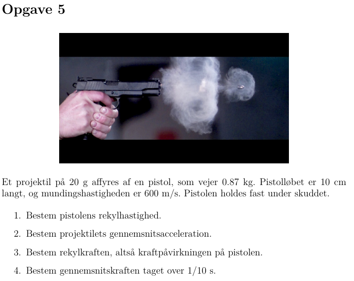
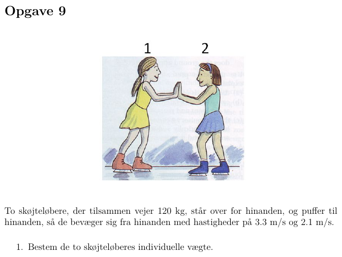
Eksempel
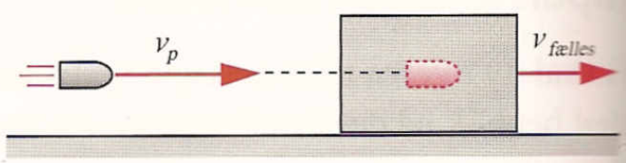
- \(m_p = 5 g\)
- \(m_k = 200 g\)
- \(v_\text{fælles} = 3.2 m/s\)
- Glat underlag mellem klods og bord.
- Hvad er projektilets hastighed umiddelbart inden det sætter sig fast i klodsen?
- \(\Delta p = 0 \to p_\text{før} =p_\text{efter}\)
- \(m_p \cdot v_p +m_k \cdot 0 = \left(m_p+m_k \right)\cdot v_\text{fælles}\)
- \(v_p = \frac{m_p+m_k}{m_p} \cdot v_\text{fælles}\)
- \(v_p = \frac{5 g +200 g}{5 g} \cdot 3.2 m/s\)
- \(v_p = 131 m/s\)
- Hov skal massen egentlig ikke være i kg? Eller er det lige meget?
- \(m_p = 5 g\)
- \(m_k = 200 g\)
- \(v_\text{fælles} = 3.2 m/s\)
- Glat underlag mellem klods og bord.
Regnetid
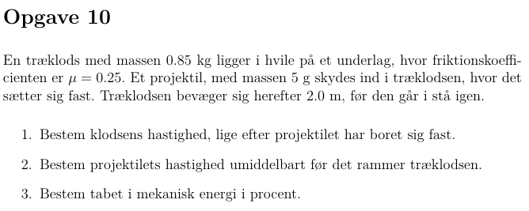
Stødprocesser
Stød uden ydre kræfter
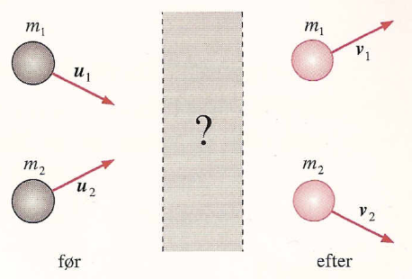
Impulsbevarelse giver:
\(\boxed{m_1 \cdot \vec{u}_1 + m_2 \cdot \vec{u}_2 = m_1 \cdot \vec{v}_1 + m_2 \cdot \vec{v}_2}\)
Centrale stød
- De to partikler bevæger sig på samme rette linje før og efter stødet.
- Kaldes et lige og centralt stød.
- Behøves ikke at blive beregnet med vektorer.
- Men regn med fortegn alligevel.
\(\boxed{m_1 \cdot u_1 + m_2 \cdot u_2 = m_1 \cdot v_1 + m_2 \cdot v_2}\)
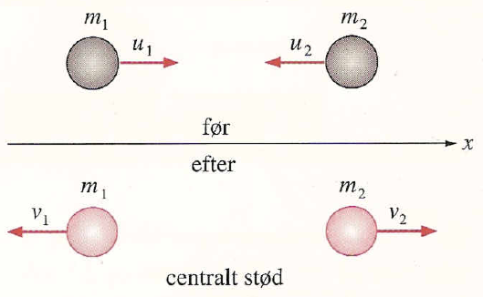
Elastiske stød
- Impulsen er bevaret.
- \(m_1 \cdot u_1 + m_2 \cdot u_2 = m_1 \cdot v_1 + m_2 \cdot v_2\)
- Den mekaniske energi er bevaret.
- \(\frac{1}{2}m_1 u_1^2 + \frac{1}{2} m_2 u_2^2 = \frac{1}{2} m_1 v_1^2 + \frac{1}{2} m_2 v_2^2\)
Uelastiske stød
- Impulsen er bevaret (som altid i en stødproces).
- Energien er ikke altid bevaret.
- 100% elastisk stød. Energien er bevaret.
- 100% uelastisk stød. Energien er ikke bevaret. Objekterne følges ad efter stødet.
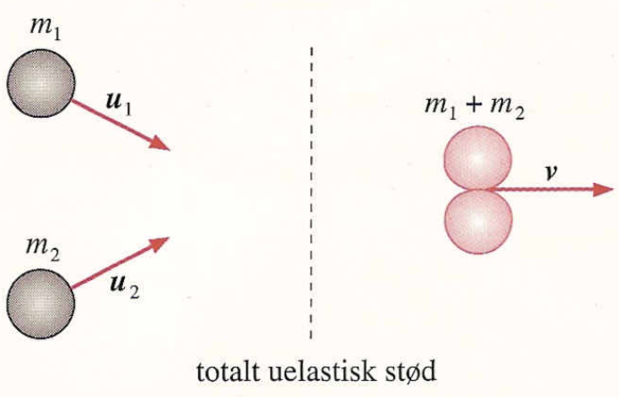
Eksempel
- To ens vogne, hver med massen \(m\).
- \(u_1=5 m/s\) , \(u_2=2.5 m/s\).
- Vognene låses sammen ved sammenstødet.
- Hvad er sluthastigheden?
- \(\Delta p = 0 \to p_{før} = p_{efter}\)
- \(m u_1 + m u_2 = (m+m) v\)
- \(m \left( u_1 + u_2 \right)= (m+m) v\)
- \(m \left( u_1 + u_2 \right)= 2m v\)
- \(\frac{u_1 + u_2 }{2}=v\)
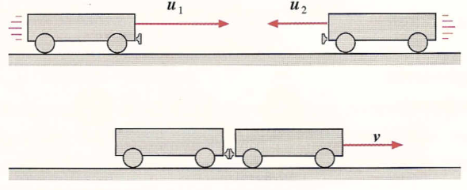
- \(\frac{5 m/s - 2.5 m/s }{2}=v\)
- \(1.25 m/s=v\)
- Vognene bevæger sig mod højre.
Regnetid
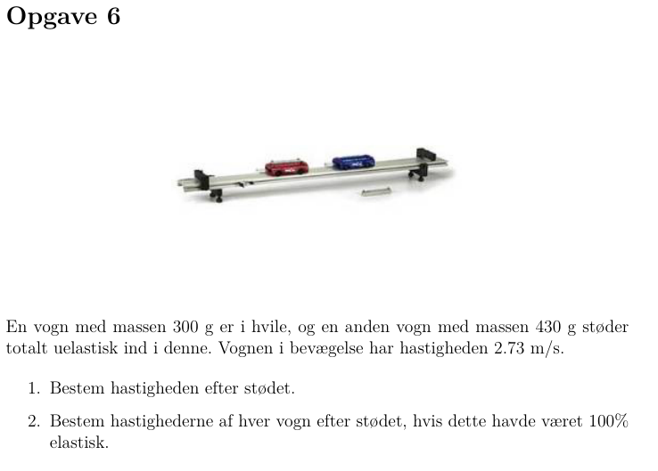
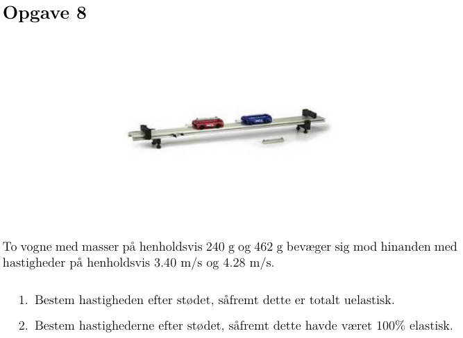
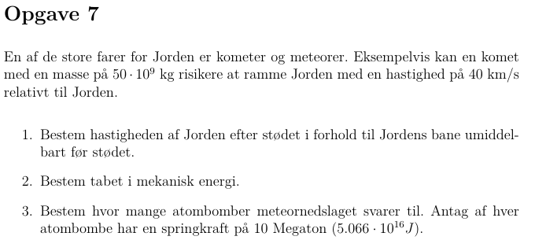
Massemidtpunkt
Massemidtpunkt
- \(\vec{r}_T = \frac{\sum_i m_i \cdot \vec{r}_i}{M}\)
- \(M = \sum_i m_i\)
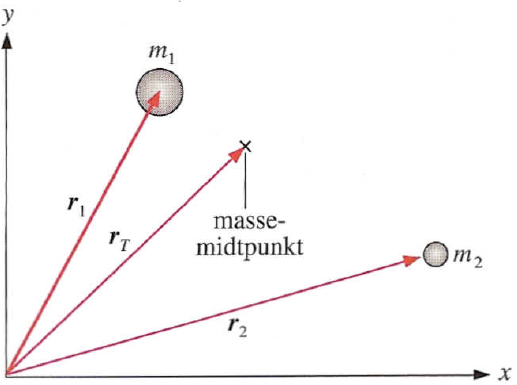
Eksempel
- 3 kugler i en retvinklet trekant.
- Vælg selv et passende koordinatsystem.
- \(x_T = \frac{\sum m_i\cdot x_i}{M}\)
- \(x_T = \frac{2 kg \cdot 0 m + 3 kg \cdot 0 m + 4 kg \cdot 3 m}{2 kg + 3 kg + 4 kg}\)
- \(x_T = 1.33 m\)
- \(y_T = \frac{\sum m_i\cdot y_i}{M}\)
- \(y_T = \frac{2 kg \cdot 0 m + 3 kg \cdot 2 m + 4 kg \cdot 0 m}{2 kg + 3 kg + 4 kg}\)
- \(y_T = 0.67 m\)
- \(\boxed{\vec{r}_T = \begin{pmatrix} 1.33 m \\ 0.67 m \end{pmatrix}}\)
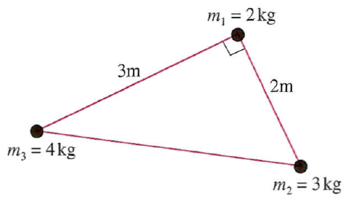
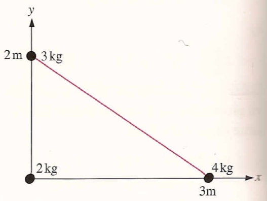
Massemidtpunktets hastighed
- \(\vec{v}_T = \frac{\Delta \vec{r}_T}{\Delta t}\)
- \(\vec{v}_T = \frac{\sum_i \frac{m_i \Delta \vec{r}_i}{M}}{\Delta t}\)
- \(\vec{v}_T = \frac{1}{M}\cdot \sum_i m_i \boxed{\frac{ \Delta \vec{r}_i}{\Delta t}}\)
- \(\vec{v}_T = \frac{1}{M}\cdot \sum_i m_i \boxed{\vec{v}_i}\)
- Systemets samlede impuls er \(\vec{p}_\text{total} = \sum_i m_i \vec{v}_i\).
- \(\boxed{\vec{p}_\text{total} = M \cdot \vec{v}_T}\)
Massemidtpunktets impuls er lige hele systemets impuls.
Massemidtpunktets acceleration
- \(\vec{a}_T = \frac{\Delta \vec{v}_T}{\Delta t}\)
- \(\vec{a}_T = \frac{1}{M} \sum_i m_i \frac{\Delta \vec{v}_i}{\Delta t}\)
- \(\vec{a}_T = \frac{\sum_i m_i \vec{a}_i}{M}\)
- \(m_i \vec{a}_i = \vec{F}_i\)
- \(\vec{F}_i = \vec{F}_{yi} + \vec{F}_{ii}\)
- \(M \vec{a}_T = \sum_i m_i \vec{a}_i\)
- \(M \vec{a}_T = \sum_i \left( \vec{F}_{yi}+ \vec{F}_{ii} \right)\)
- \(M \vec{a}_T = \sum_i \vec{F}_{yi}+ \boxed{\sum_i \vec{F}_{ii}}\)
- \(M \vec{a}_T = \sum_i \vec{F}_{yi}\)
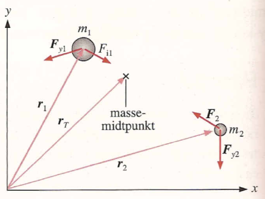
- \(\vec{F}_y = \sum_i \vec{F}_{yi}\)
- \(\boxed{\vec{F}_\text{ydre} = M \cdot \vec{a}_T}\)
Man kan samle massen for et system i ét punkt (massemidtpunktet), og lade den samlede ydre kraft virke på dette punkt.
Eksempel
Kast med stav med tre lysdioder.
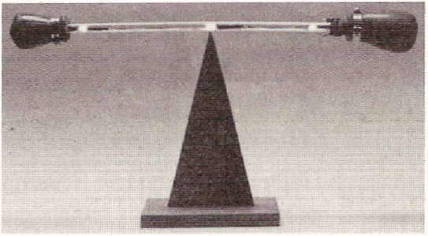
Kast med stav med tre lysdioder.
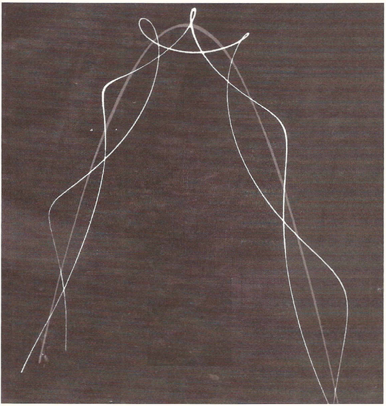
Regnetid
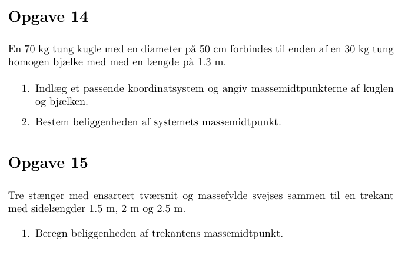
Raketligningen uden tyngdefelt
Raketligningen
- Ude i rummet kommer en raket fremad ved at smide brændstof den modsatte vej.
- Raket har øjeblikshastigheden \(v(t)\) og starthastigheden \(v_0\).
- Brændstof slynges med hastigheden \(u\) relativt til raketten.
- Raketten bliver altså lettere efter udstødning af brændstof.
- \(\boxed{v(t) - v_0 = -u \cdot \ln \left( \frac{m(t)}{m_0} \right)}\)
- \(m_0\) er begyndelsesmassen, \(m(t)\) er lavere masse af raketten efter udstødning.
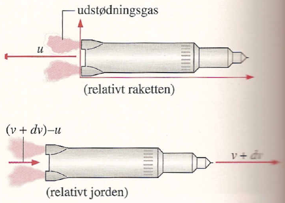
Regnetid
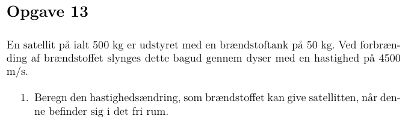
Raketligningen med tyngdefelt
Raketligningen tæt på Jorden
- For lodret opsendelse tæt på Jorden gælder \[F_{\mathrm{res}}=m \cdot a_{\mathrm{res}}=F_{\mathrm{raket}}-F_{\mathrm{t}} = -u \cdot \frac{dm}{dt} - m \cdot g\]
- Den resulterende acceleration bliver \[a_{\mathrm{res}} = \frac{dv}{dt}= -u \cdot \frac{1}{m}\cdot \frac{dm}{dt}-g\]
- Som integreres til \[\boxed{v(t) -v_0 = -u \cdot \ln \left( \frac{m(t)}{m_0} \right)-g\cdot t}\]
Diverse resterende opgaver
Regnetid
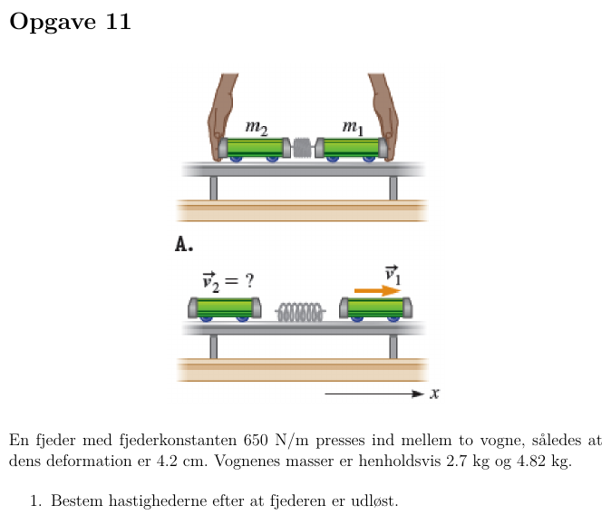
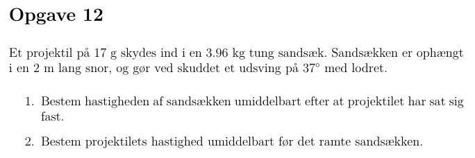